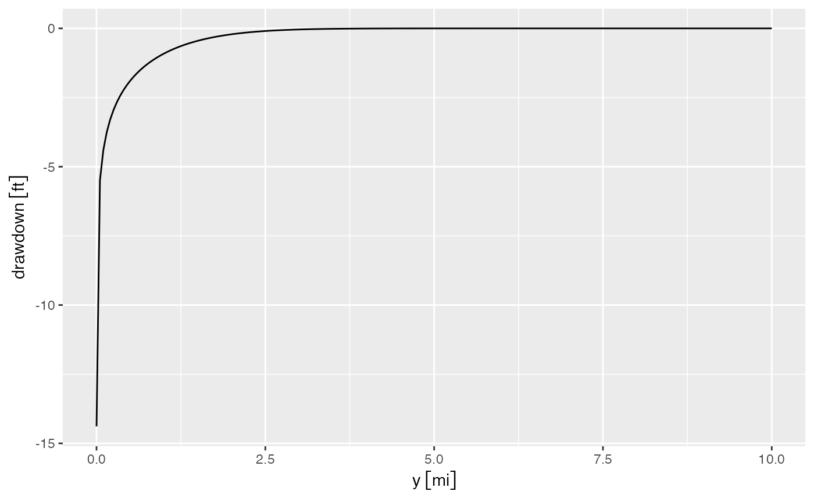
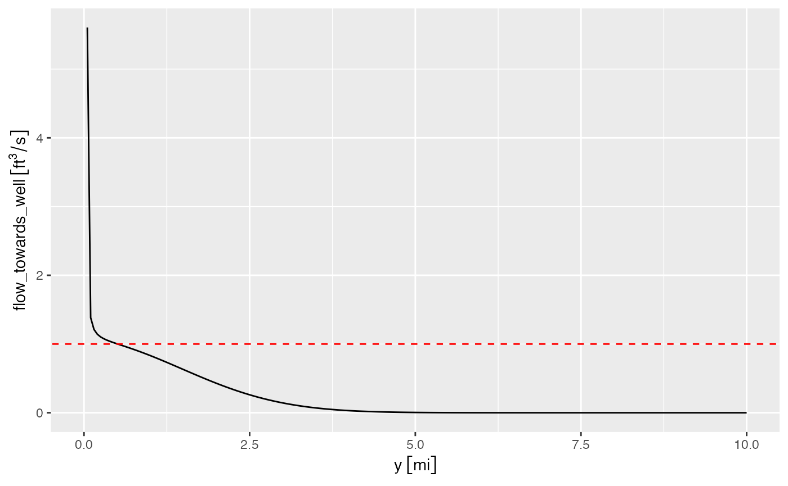

Getting started with ISW package
Getting-started-with-ISW-package.RmdThis vignette illustrates key elements of the isw
package, used to generate simple models of interconnected surface water.
The package includes functions to estimate stream depletion and aquifer
drawdown.
The idealized model in isw assumes the wells are
screened over the saturated thickness of the aquifer, the stream fully
penetrates the aquifer, all flow is horizontal, and the transmissivity
is uniform and insensitive to changes in water level.
The package can be installed using
remotes::install_github("gopalpenny/isw"), and loaded
as:
library(isw)Main package functions
The isw package has three primary functions to
understand interconnected surface waters:
-
get_stream_depletion_fraction: Estimate stream depletion due to pumping well(s) -
get_aquifer_drawdown_ratio: Estimate aquifer drawdown due to pumping well(s) (no stream) -
get_depletion_from_pumping: Estimate stream depletion and aquifer drawdown (with stream)
We’ll see how each of these works, below. Note that within these models, representation of the stream uses the method of well images, which basically says that streams with constant head can be modeled by mirroring wells across the stream and switching the sign of pumping. In other words, a pumping well and and injection well on opposite sides of the stream will ensure constant hydraulic head at the midpoint between the two wells, assuming the rates of pumping and injection are equal in magnitude.
Note that the get_aquifer_drawdown_ratio does not assume
a stream, and therefore works only for a single well. Both
get_stream_depletion_fraction and
get_depletion_from_pumping account for an image well on the
other side of the stream.
Aquifer parameters
Aquifers in isw are represented with just a few
variables. Let’s consider an aquifer with the following
characteristics:
- Saturated thickness (
D): 100 ft - Permeability (
K): 0.001 ft/sec - Drainable porosity of the aquifer (
V): 0.2
Note that isw uses the units package to
keep track of dimensionality, therefore we can begin by loading this
package. The set_units function can be used to specify
units objects, and therefore aquifer parameters.
Some basic calculations
The main functions in isw use variables to describe the
spatial relationship among pumping wells, observation wells, and the
river. These include the following variables illustrated in the figure
below:
-
x1: distance from the stream to a pumping well, -
x2: distance from the stream to a observation well well, and -
y: distance between observation and pumping wells parallel to the river.
Note that the stream can be omitted by specifying
x1 = Inf and x2 = Inf.

Estimating stream depletion
The get_stream_depletion_fraction() function estimates
stream depletion at time t as a fraction of pumping from an
individual pumping well, following Glover and Balmer (1954). We can call
get_stream_depletion_fraction by specifying
x1, the aquifer parameters, and the elapsed time
t since pumping initiated.
x1 <- set_units(0.5, "mi")
stream_depletion_fraction <- get_stream_depletion_fraction(x1 = x1, K = K, D = D, V = V, t = t)
stream_depletion_fraction
#> [1] 0.8335347We can get total stream depletion by multiplying this fraction by a pumping rate, for instance 1 cfs:
pumping_rate <- set_units(1, "ft^3/s")
stream_depletion <- stream_depletion_fraction * pumping_rate
stream_depletion
#> 0.8335347 [ft^3/s]As can be seen, the stream depletion fraction is simply the
percentage of total pumping, at time t, that is coming from
stream depletion. Or put another way, it is:
Estimating aquifer drawdown
The get_aquifer_drawdown_ratio() function gives the
change in water level per unit pumping at an observation well
(without a stream). The parameters x1,
x2, and y specify the geometry of the pumping
well, observation well, and stream.
y <- set_units(1, "mi")
aquifer_drawdown_ratio <- get_aquifer_drawdown_ratio(y = y, x1 = Inf, x2 = Inf, K = K, D = D, V = V, t = t)
aquifer_drawdown_ratio
#> -1.540413 [s/ft^2]Note that get_aquifer_drawdown_ratio has an optional
parameter, well_diam that defaults to a value of 0. When
specified, drawdown does not increase inside the well. In other words,
when r<well_diam/2, drawdown is calculated as if
r=well_diam/2, where r is the distance between
the pumping and observation wells
().
Depletion and drawdown
The get_depletion_from_pumping() function estimates
stream depletion fraction (using
get_stream_depletion_fraction) and changes in water level
at an observation well (get_aquifer_drawdown_ratio) due to
abstraction from a pumping well at time t after pumping
initiates. Like get_stream_depletion_fraction, and unlike
get_aquifer_drawdown_ratio, the function accounts for a
the effect of the stream as a constant head boundary using, as
noted above, the method of images.
This function uses a couple new parameters. The x2
parameter
()
is the distance between the observation well and the stream. If
r is the distance between the pumping and observation
wells, y is the component of this distance that is parallel
to the stream. In other words,
.
Keeping the remaining parameters the same as before, we can call this
function as:
x2 <- set_units(1e3, "ft")
y <- set_units(1e3, "ft")
depletion_from_pumping <- get_depletion_from_pumping(x1 = x1,
x2 = x2,
y = y,
K = K,
D = D,
V = V,
t = t)
depletion_from_pumping
#> stream_depletion_fraction aquifer_drawdown_ratio
#> 1 0.8335347 -1.049005 [s/ft^2]Parameter combinations with vector and
data.frame objects
We can also estimate drawdown at multiple distances from a pumping
well. We use the function get_aquifer_drawdown_ratio,
noting that both stream_depletion_fraction and
get_depletion_from_pumping also allow multiple parameter
combinations specified as vector or data.frame
objects. Let’s get this ratio a distances ranging from 1 ft to 10 miles,
after 2 years of pumping.
y <- set_units(seq(1/5280, 10, length.out = 200), "mi")
t <- set_units(2, 'year')
aquifer_drawdown_ratio <- get_aquifer_drawdown_ratio(y = y, x1 = Inf, x2 = Inf, K = K, D = D, V = V, t = t)
head(aquifer_drawdown_ratio)
#> Units: [s/ft^2]
#> [1] -14.384728 -5.496842 -4.397988 -3.755887 -3.301625 -2.950755Equivalently, we can specify parameter combinations in a
data.frame. The tidyr function
crossing() can be very helpful to get multiple parameter
combinations.
library(tidyr)
# create tibble with all parameter combinations
df <- tibble(K = K, D = D, V = V, t = t, x1 = Inf, x2 = Inf) %>%
crossing(y = set_units(seq(1/5280, 10, length.out = 200), "mi"))
# call function with tibble to specify parameters
aquifer_drawdown_ratio <- get_aquifer_drawdown_ratio(df)
head(aquifer_drawdown_ratio)
#> Units: [s/ft^2]
#> [1] -14.384728 -5.496842 -4.397988 -3.755887 -3.301625 -2.950755For simplicity, let’s assume the well was pumping 1 cusec over those
two years. The change in water level is calculated as
aquifer_drawdown_ratio multiplied by the pumping rate.
pumping_rate <- set_units(1, "ft^3/sec")
aquifer_drawdown <- aquifer_drawdown_ratio * pumping_rateWe can then plot the drawdown as a function of pumping using
ggplot. The bind_cols function from
dplyr allows us to join the drawdown results with the
original data.frame.
library(ggplot2)
library(dplyr)
drawdown_df <- df %>%
bind_cols(drawdown = aquifer_drawdown)
ggplot(drawdown_df, aes(y, drawdown)) +
geom_line()
Checking the drawdown calculations
As a check, to give confidence in this calculation, we can calculate
the volume of water drained from the aquifer as drawdown times the
drainable porosity for circular bands (with differential radius
)
around the well. For simplicity, we use the dplyr::mutate
function to calculate this value.
dy <- y[2] - y[1]
drawdown_df <- drawdown_df %>%
mutate(d_area = dy * 2 * pi * y,
volumetric_drawdown = drawdown * d_area * V)In an aquifer with no recharge, the total volumetric drawdown should
be equal to the pumping rate over the time period, 1 cusec over five
years or 63 million ft3. The water drained from the aquifer
can be calculated using sum(volumetric_drawdown), which
gives a result of -63 million ft3.
The total radial flow towards the well can be calculated as (the typical negative sign in Darcy’s law is removed because we are calculating flow in the direction of negative r). We can run this calculation and plot flow towards the aquifer.
drawdown_df <- drawdown_df %>%
mutate(flow_towards_well = 2 * pi * y * D * K * (drawdown - lag(drawdown)) / dy,
flow_towards_well = set_units(flow_towards_well, "ft^3/s"))
ggplot(drawdown_df, aes(y, flow_towards_well)) + geom_line() +
geom_abline(slope = 0, intercept = 1, color = "red", linetype = "dashed")
#> Warning: Removed 1 row containing missing values or values outside the scale range
#> (`geom_line()`).
Note that closer to the pumping well this calculation suffers from
coarse discretization of the domain causing the flowrate to diverge from
1 ft3/s. You can verify this yourself by, for instance,
changing the radius to
y <- set_units(seq(1, 5, length.out = 200), "ft") and
re-running the calculations.
References
Glover, Robert E., and Glenn G. Balmer. “River Depletion Resulting from Pumping a Well near a River.” Eos, Transactions American Geophysical Union 35, no. 3 (1954): 468–70. https://doi.org/10.1029/TR035i003p00468.